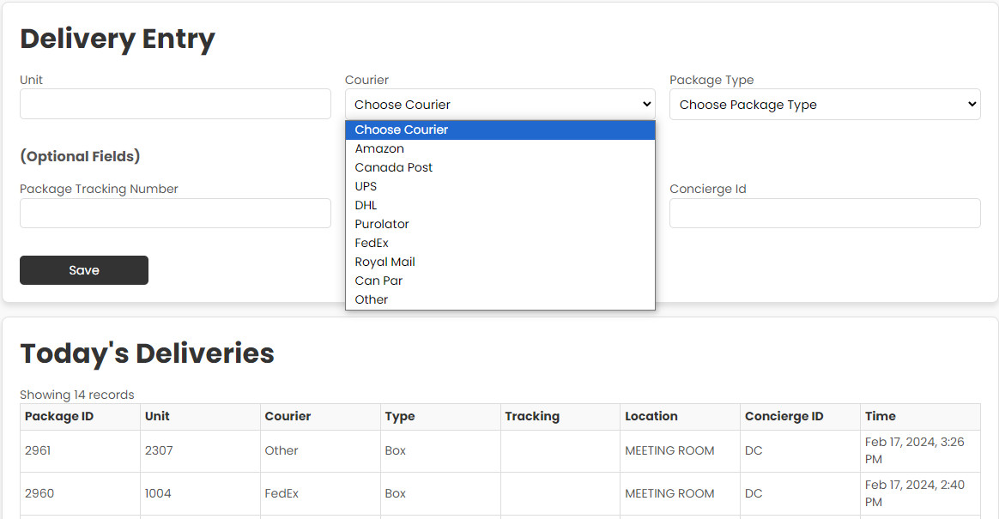
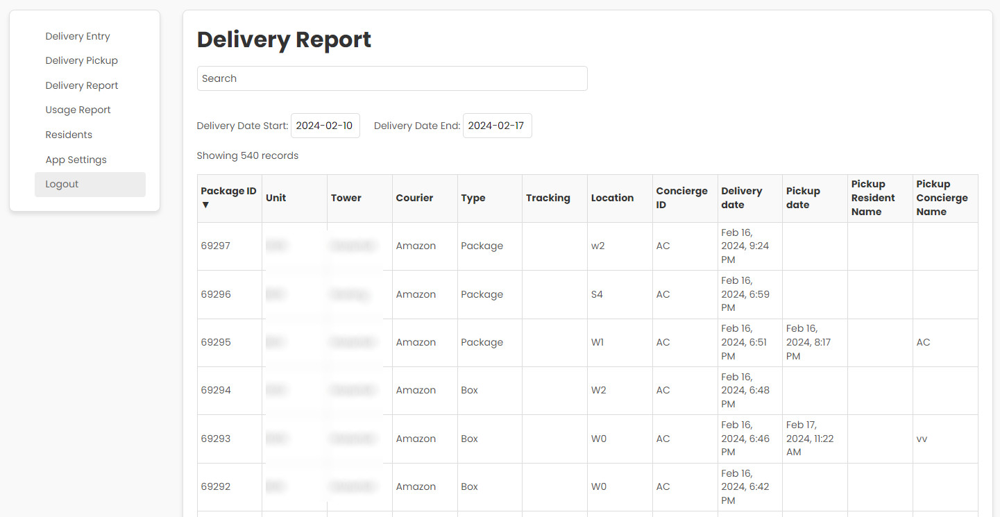

Package Delivery Notification
Our most popular app, this package delivery notification empowers strata buildings to enable concierges to notify residents of package deliveries. Simple to use with little training required.
Resident Self Registration
Radically simple resident self registration. Concierge manages the registrations and will automatically track historical registrations. Building manager can be notified of duplicate registrations indicating resident moves and can verify Form K information.
App supports single buildings as well as complexes with multiple towers
Simple Delivery Entry
Simple concierge entry for deliveries with package barcode scanning function with prefilled package types and location and concierge ID entries
Historical Delivery Reporting
Built in reports to track delivery notifications and pickups. Optionally use a barcode scanner to include package tracking information with the notifications
Usage Reporting
Configure limits and overage fees so concierges are notified of excessive deliveries and can report on potential chargebacks to residents
Enterprise Class Data Security
All apps are hosted in major public cloud provider and data is backed up encrypted across multiple Canadian based datacenter locations